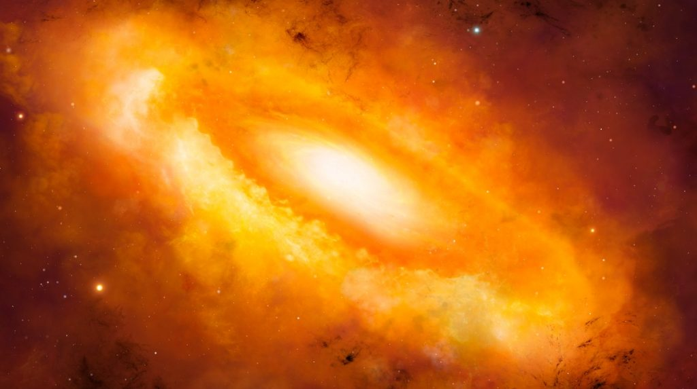
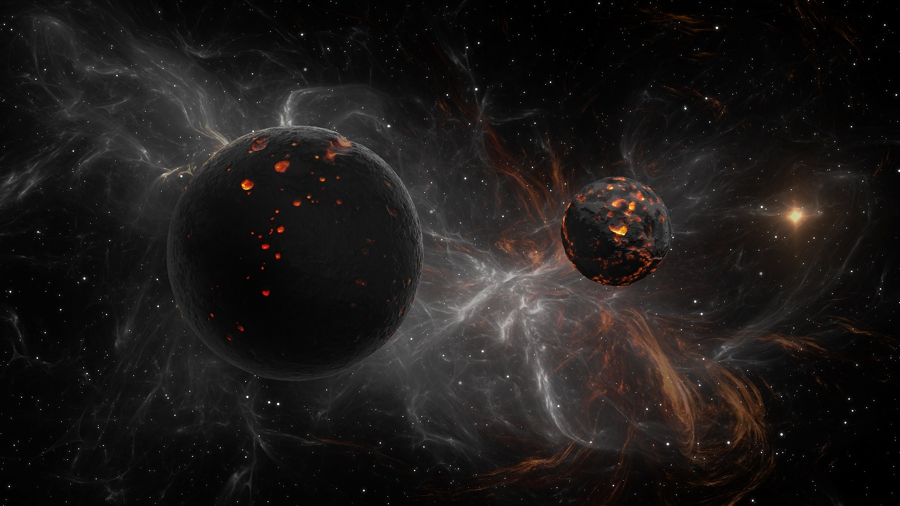
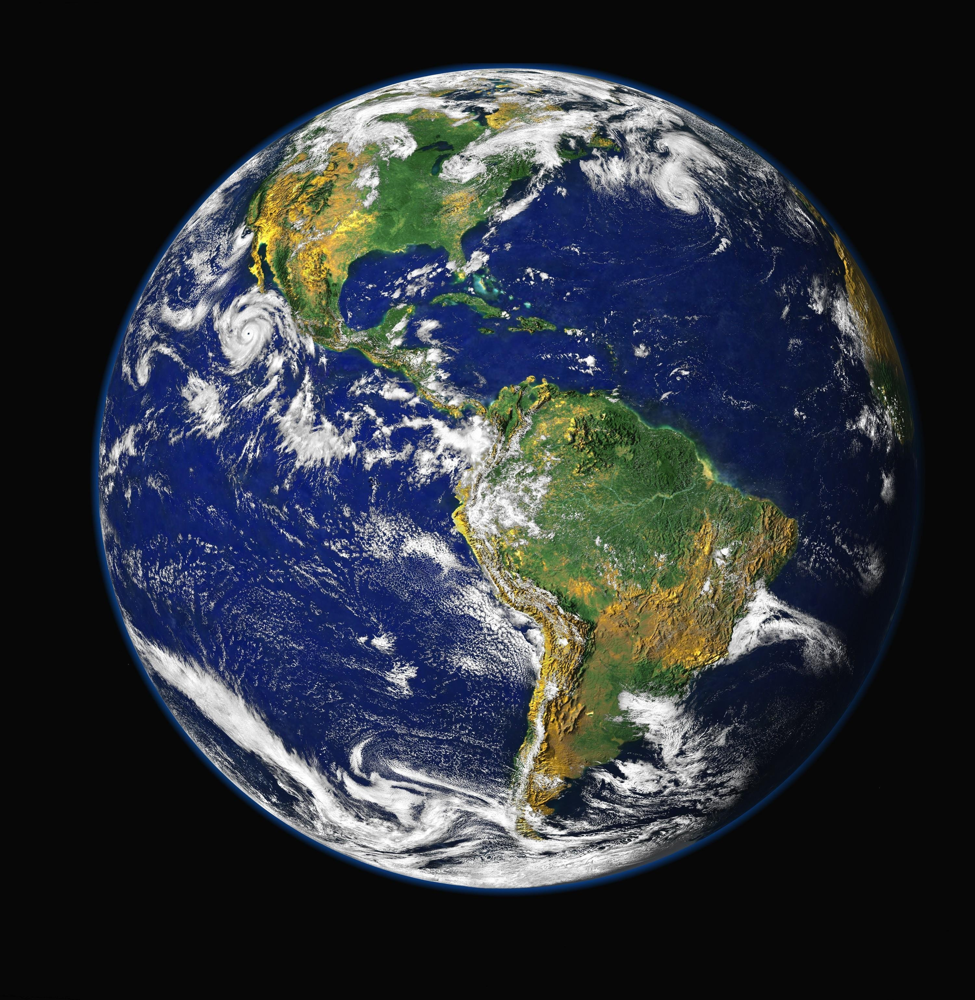

¿Qué son los Planetas?
Los planetas son cuerpos celestes que orbitan alrededor de una estrella (como el Sol) y que tienen suficiente masa para que su gravedad les permita adoptar una forma esférica. Además, deben haber limpiado su órbita de otros objetos y no deben ser considerados satélites de otros cuerpos. Esta definición es ampliamente aceptada en la comunidad científica.
Clasificación de los planetas
Los planetas se pueden clasificar en dos grandes grupos:
- Planetas terrestres: Estos planetas son rocosos y tienen superficies sólidas. Incluyen:
- Mercurio: El planeta más cercano al Sol, con temperaturas extremas y una atmósfera muy delgada.
- Venus: Similar en tamaño a la Tierra, pero con una atmósfera densa y tóxica, que genera un efecto invernadero extremo.
- Tierra: El único planeta conocido que alberga vida, con agua en estado líquido y una atmósfera rica en oxígeno.
- Marte: Conocido como el "planeta rojo", tiene características geológicas que sugieren que alguna vez tuvo agua líquida en su superficie.
- Planetas gaseosos (o jovianos): Estos planetas son mucho más grandes que los terrestres y están compuestos principalmente de hidrógeno y helio. Incluyen:
- Júpiter: El planeta más grande del sistema solar, conocido por su Gran Manch Roja, una enorme tormenta. Tiene un gran número de lunas y un sistema de anillos.
- Saturno: Famoso por sus anillos espectaculares y también tiene numerosas lunas, incluyendo Titán, que tiene una atmósfera densa.
- Urano: Un gigante gaseoso que se caracteriza por su inclinación axial extrema, lo que hace que sus polos apunten casi hacia el Sol.
- Neptuno: Conocido por sus fuertes vientos y tormentas, es el planeta más alejado del Sol.
Formación de los planetas
Los planetas se forman a partir de la misma nube de gas y polvo que da origen a una estrella. Este proceso se llama acreción y generalmente sigue estos pasos:
- Nebulosa solar: Una nube de gas y polvo colapsa bajo su propia gravedad, formando una protoestrella en el centro y un disco protoplanetario alrededor. 
- Formación de cuerpos planetarios: Partículas de polvo y hielo comienzan a chocar y unirse, formando cuerpos más grandes llamados planetesimales. Con el tiempo, estos planetesimales se agrupan para formar protoplanetas. 
- Clearing: A medida que los protoplanetas continúan acumulando material, sus fuerzas gravitacionales les permiten limpiar su órbita de otros cuerpos, convirtiéndose en planetas. 
Características de los planetas
- Tamaño y masa: Los planetas varían en tamaño, desde los pequeños como Mercurio hasta gigantes como Júpiter. La masa de un planeta afecta su gravedad, atmósfera y potencial para albergar vida.
- Atmósfera: La composición de la atmósfera de un planeta es crucial para determinar su clima y condiciones de vida. Por ejemplo, la Tierra tiene una atmósfera rica en oxígeno, mientras que Venus tiene una atmósfera densa de dióxido de carbono.
- Órbitas: Los planetas orbitan alrededor del Sol en trayectorias elípticas. La distancia al Sol influye en su temperatura y condiciones.
- Satélites: Muchos planetas tienen lunas, que son cuerpos que orbitan a su alrededor. La Tierra tiene una luna, mientras que Júpiter y Saturno tienen docenas.
Importancia de los planetas
Los planetas son fundamentales para entender el universo y la posibilidad de vida fuera de la Tierra. Algunos aspectos importantes incluyen:
- Condiciones para la vida: La búsqueda de planetas similares a la Tierra (exoplanetas) ha aumentado, ya que se investiga la posibilidad de vida en otros mundos.
- Historia del sistema solar: Estudiar los planetas proporciona información sobre la historia y evolución del sistema solar, así como de la formación de otros sistemas planetarios.
- Meteorología y climatología: Los planetas ofrecen una variedad de fenómenos atmosféricos, lo que ayuda a los científicos a entender mejor el clima y la meteorología, tanto en la Tierra como en otros cuerpos celestes.
Observación y estudio de planetas
El estudio de los planetas se realiza mediante diversas técnicas:
- Telescopios: Los telescopios ópticos y de radio se utilizan para observar los planetas en nuestro sistema solar y en otros sistemas estelares.
- Exploración espacial: Las misiones espaciales, como sondas y rovers, han proporcionado información valiosa sobre los planetas. Por ejemplo, el rover Perseverance de la NASA está explorando Marte en busca de signos de vida pasada.
- Espectroscopía: Analizando la luz que proviene de los planetas, los científicos pueden determinar su composición atmosférica y otras características.
Conclusión
Los planetas son cuerpos fascinantes que juegan un papel crucial en la estructura del universo. Su formación, características y dinámicas no solo enriquecen nuestra comprensión del sistema solar, sino que también plantean preguntas sobre la posibilidad de vida en otros mundos. A medida que la tecnología avanza, nuestra capacidad para explorar y comprender los planetas sigue creciendo, abriendo nuevas fronteras en la astrofísica y la búsqueda de vida extraterrestre.